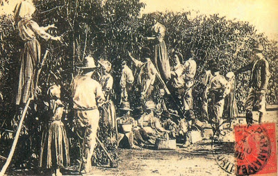

Decreto n.º 2827, de 15 de março de 1879 – Lei de Locação de Serviços sobre a questão do trabalho rural.
Regulamentava, entre outras coisas, as obrigações contratuais dos fazendeiros com os trabalhadores rurais e as disposições sobre greve.